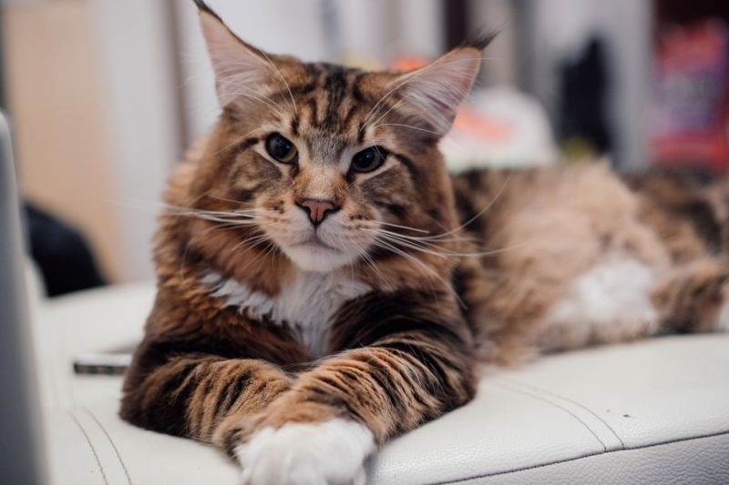

Эти кошки сильно привязываются к людям, но сохраняют определенную независимость. Не требуя постоянного внимания, они все же стараются находиться рядом с владельцем и проявляют интерес ко всем его занятиям. Мейн-куны славятся деликатным и ласковым характером и, как правило, хорошо ладят с детьми и домашними животными. В отличие от многих других пород, они не стремятся взбираться на высокие предметы и предпочитают играть на полу.
Мейн-кун — кошка от среднего до очень крупного размера, с длинным мускулистым телом и крепким костяком, благодаря которым выглядит необыкновенно мощным. Голова массивная, с квадратной мордой, уши высоко поставленные, с кисточками на концах. Длинный и пышный хвост — особенность породы мейн-кун; в холодную погоду эти кошки оборачивают хвост вокруг тела, чтобы согреться.
